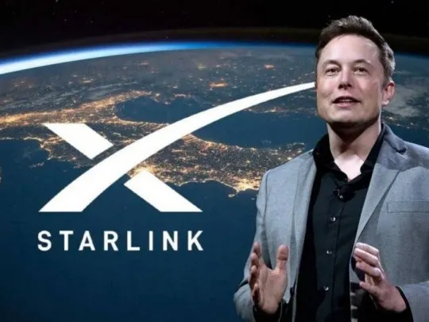

Starlink llega a la Argentina: qué es y cuánto cuesta el servicio de Internet de Elon Musk
La empresa proveedora de internet vía satelital de Elon Musk fue autorizada por el ENACOM para ofrecer su servicio en el país. ¿Cuánto cuesta contratarlo? Aquí te contamos todo
Leer más en el portal de noticias
Estral Esports vs. Movistar R7: fecha, horario y cómo ver la Gran Final del Apertura - LLA 2024/
Es hora de la Gran Final de la Apertura 2024 de La Liga de Campeones Latinoamericanos. Finalmente, conocemos los horarios, canales de transmisión y los equipos participantes.
Leer más en el portal de noticias
El top 10 de los teléfonos celulares más vendidos de la historia
Los celulares son parte de la vida cotidiana desde hace décadas y el top de los 10 más vendidos hasta nuestros días. ¡Toda la innovacion y tecnologia de los ultimos 40 años! ¿Tuviste alguno de estos modelos? ¡Mira el ranking!